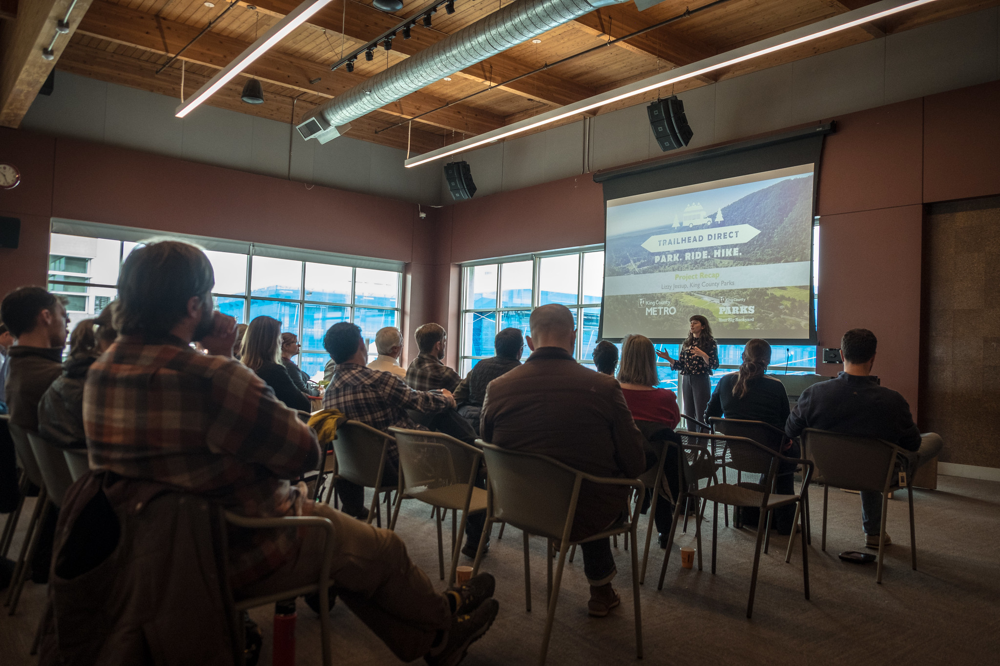
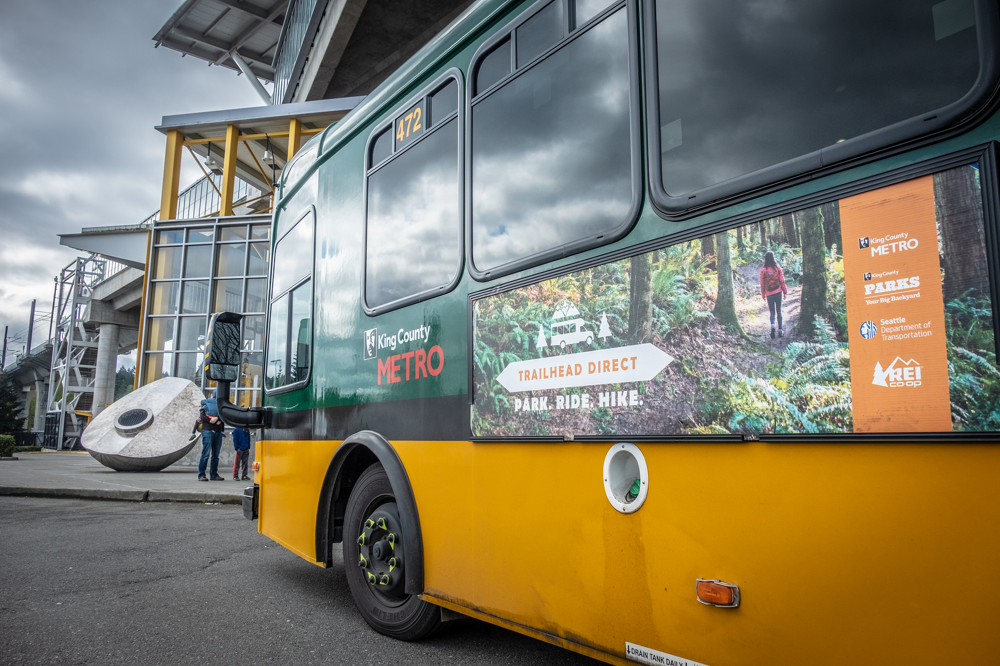

Transit
Role: Program Manager (Web Design/ Marketing)
Creative Director: Me!
In 2017 I was asked to manage what was supposed to be a small transportation project to decrease illegal parking at trailheads. Over the course of three years, the program grew exponentially to become a multi route system, transporting over 35,838 rides in summer 2019, a 75% increase in ridership compared to 2018. I oversaw all the marketing, communications, stakeholder engagement, and web design for the project as well as supported the operational planning. The program was considered a huge success as evidence by the increase in popularity and extensive media coverage.
Web Design
In order to provide the best user experience, I managed the design and creation of a Trailhead Direct microsite using Wordpress. From the wireframing to the content creation, I developed a web experience in which users can easily access resposive schedule and route information. The goal was to incorporate some of the King County branding but to also prioritize the unique user experience of a Trailhead Direct rider. Through UX design testing, UI integration, trailheaddirect.org gained significant SEO traction and logged more than 83K views at the end of the 2018 season.
Stakeholder Engagement

An integral component of Trailhead Direct was the coalition of over 100 stakeholders who supported the program. Transit and outdoors agencies from the public, private, and non-profit sectors joined to leverage resources to promote the service. I facilitated multiple community meetings in which we discussed the design of Trailhead Direct. We received crucial feedback at these meetings and evolved the program accordingly.
Thanks to feedback from the coalition, it was evident that many immigrant, refugee and other non-English speaking communities face language, cultural and lifestyle barriers to accessing outdoor recreation opportunities and services like Trailhead Direct. In order to begin to break down these barriers, I helped facilitate a partnership with ECOSS, a local urban environmental nonprofit. We provided small grants to community leaders to do outreach within their own communities. The partnership resulted in five trips on Trailhead Direct and over 65 participants from the Bhutanese, Korean, Cambodian and Latinx communities accessing the outdoors. The feedback from these participants and trips was used to drive the planning for the 2019 Trailhead Direct season. In order to support these groups, I led the transcreation of our brochures into Spanish, Vietnamese, Nepali, Swahili, and Mandarin.
Marketing

I managed a variety of marketing campaigns throughout the years working on Trailhead Direct. Just some of the many highlights:
- We did a large scale transit ad buy each year, prioritizing routes on both King County Metro and Sound Transit that were likely to intersect our Trailhead Direct personas.
- The social media reach for the 2019 launch logged 4 million impressions and 270 unique posts over a five day period.
- I managed an external agency for both the 2018 and 2019 seasons to produce marketing materials.
- We were constantly collaborating on new innovative ways to increase ridership like this collectable pin giveaway.